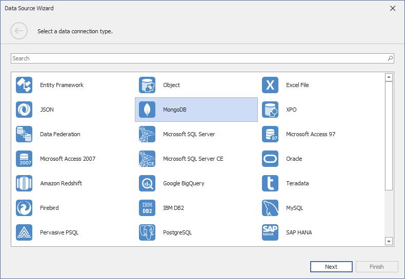
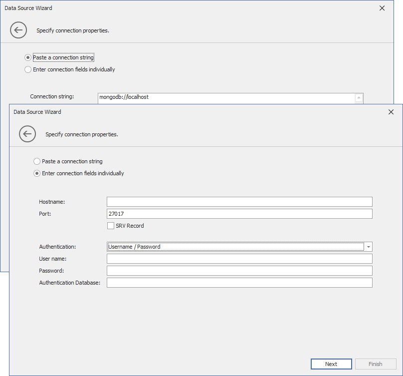
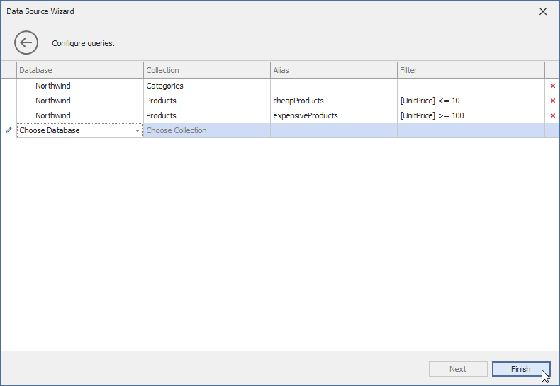
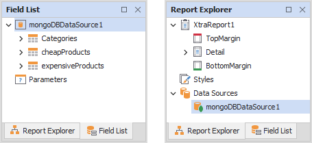
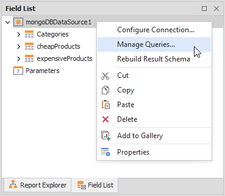
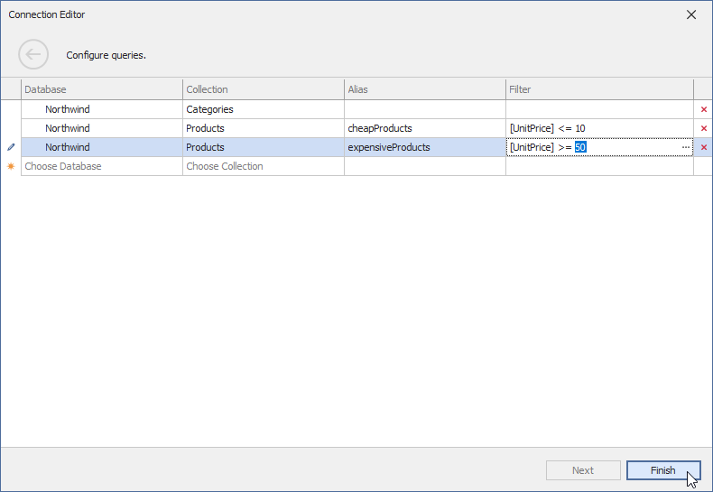
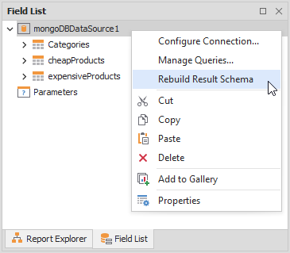

Bind a Report to a MongoDB Instance
Create a new project and add a blank report to this project. Follow the steps below to bind the report to a MongoDB instance.
Invoke the Data Source Wizard
Click the report's smart tag, expand the drop-down menu for the Data Source property in the "Report Tasks" list, and click Add Report Data Source.

Select the MongoDB Data Source
Select MongoDB in the invoked Data Source Wizard and click Next.

Specify Connection Properties
Paste the entire string or enter connection fields individually. Refer to the following topic for information on connection string format and options: Connection String URI Format.

Specify Data Queries
On the next page, choose database collections that you want to load from the MongoDB instance. Specify the name of the database and database collection in the Database and Collection columns. You can use the Filter column to specify filter conditions for items of the database collections.
The names of queries to database collections should be unique. A string stored in a query's Collection column is the default name for this query. To create several queries to the same database collection, use the Alias column to specify different names for these queries.

Use the Created MongoDB Data Source
The created data source appears in the Field List and Report Explorer.

You can bind report controls to the fields from this data source. Refer to the following topic for more information: Bind Report Controls to Data
Modify the Created MongoDB Data Source
You can change connection parameters and modify queries for the created data source. Right-click the data source node in the Field List or Report Explorer and select Configure Connections or Manage Queries.

Reconfigure the connection parameters or queries in the invoked Connection Editor and click Finish.

Right-click the data source node and select Rebuild Result Schema to apply the changes.
